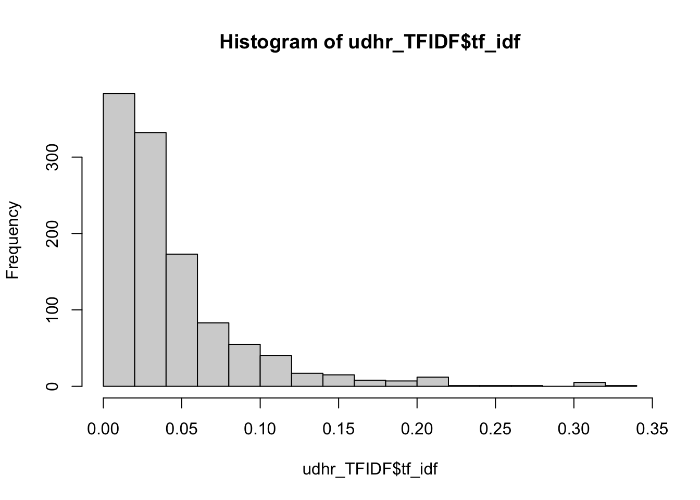

8 Text Analysis II: Distances, Keywords, Summarization
8.1 Goals
- similarity distances;
- keyword extraction (tf-idf);
- text summarization techniques;
8.2 Preliminaries
8.2.1 Data
prep_fun = function(x) {
x %>%
str_to_lower %>% # make text lower case
str_replace_all("[^[:alnum:]]", " ") %>% # remove non-alphanumeric symbols
str_replace_all("\\s+", " ") # collapse multiple spaces
}d1862 <- read.delim("./files/data/dispatch_1862.tsv", encoding="UTF-8", header=TRUE, quote="")The following are the libraries that we will need for this section. Install those that you do not have yet.
#install.packages("tidyverse", "readr", "stringr", "text2vec")
#install.packages("tidytext", "wordcloud", "RColorBrewer"", "quanteda", "readtext", "igraph")
# General ones
library(tidyverse)
library(readr)
library("RColorBrewer")
# text analysis specific
library(stringr)
library(text2vec)
library(tidytext)
library(wordcloud)
library(quanteda)
library(readtext)
library(igraph)8.3 Document similarity/distance measures: text2vec library
Document similarity—or distance—measures are valuable for a variety of tasks, such as identification of texts with similar (or the same) content. Let’s just filter it down to some sample that would not take too much time to process. We also need to clean up our texts for better calculations.
8.3.1 Distance Measures: Jaccard index, Cosine similarity, Euclidean distance
The text2vec library can calculate a several different kinds of distances (details: http://text2vec.org/similarity.html): Jaccard, cosine, and Euclidean.
8.3.1.1 Jaccard similarity/index
is a simple measure of similarity based on the comparison of two sets, namely, as the proportion of the number of common words to the number of unique words in both documents. Jaccard similarity takes only unique set of words for each sentence/document (https://en.wikipedia.org/wiki/Jaccard_index). Jaccard index is commonly used to find text that deal with the same subjects (share same vocabulary — frequencies of words have no effect on this measure)
Jaccard similarity measures the similarity between two nominal attributes by taking the intersection of both and divide it by their union.
8.3.1.2 Cosine similarity
another approach that measures similarity based on the content overlap between documents: each document is represented as a bag-of-words and as a sparse vector; the measure of overlap is defined as angle between vectors. Cosine similarity is better when we compare texts of varied length (angle of vectors, instead of distance). (https://en.wikipedia.org/wiki/Cosine_similarity)
Cosine similarity measures the similarity between two vectors by taking the cosine of the angle the two vectors make in their dot product space. If the angle is zero, their similarity is one, the larger the angle is, the smaller their similarity. The measure is independent of vector length.
8.3.1.3 Euclidean distance
one of the most common measures—a straight-line distance between two points in Euclidian space; based on word frequencies and most commonly used to find duplicates (https://en.wikipedia.org/wiki/Euclidean_distance).
NB: more detailed explanations, see https://cmry.github.io/notes/euclidean-v-cosine
8.3.1.4 Testing…
Let’s try a small and simple example first.
sentences = c("The Caliph arrived to Baghdad from Mecca.",
"The Caliph arrived to Mecca from Baghdad.",
"The Caliph arrived from Mecca to Baghdad. The Caliph arrived from Baghdad to Mecca.",
"The Caliph arrived to Baghdad from Mecca. The Caliph arrived. The Caliph arrived. The Caliph arrived.",
"The Caliph arrived to Baghdad from Mecca. The Caliph returned to Mecca from Baghdad.",
"The Caliph arrived from Mecca to Baghdad, and then returned to Mecca.",
"The vezier arrived from Isbahan to Mecca. The Caliph, Caliph, Caliph returned from Mecca to Baghdad Baghdad Baghdad.")
testDF <- data.frame("ID" = as.character(1:length(sentences)), "TEXT" = sentences)
testDF$TEXT <- prep_fun(testDF$TEXT)Now, converting to text2vec format:
# shared vector space
it = itoken(as.vector(testDF$TEXT))
v = create_vocabulary(it)
vectorizer = vocab_vectorizer(v)
# creating matrices
sparseMatrix = create_dtm(it, vectorizer)
denseMatrix = as.matrix(sparseMatrix)Let’s take a look inside:
denseMatrix## and isbahan then vezier returned from arrived baghdad mecca to the caliph
## 1 0 0 0 0 0 1 1 1 1 1 1 1
## 2 0 0 0 0 0 1 1 1 1 1 1 1
## 3 0 0 0 0 0 2 2 2 2 2 2 2
## 4 0 0 0 0 0 1 4 1 1 1 4 4
## 5 0 0 0 0 1 2 1 2 2 2 2 2
## 6 1 0 1 0 1 1 1 1 2 2 1 1
## 7 0 1 0 1 1 2 1 3 2 2 2 3sparseMatrix## 7 x 12 sparse Matrix of class "dgCMatrix"## [[ suppressing 12 column names 'and', 'isbahan', 'then' ... ]]##
## 1 . . . . . 1 1 1 1 1 1 1
## 2 . . . . . 1 1 1 1 1 1 1
## 3 . . . . . 2 2 2 2 2 2 2
## 4 . . . . . 1 4 1 1 1 4 4
## 5 . . . . 1 2 1 2 2 2 2 2
## 6 1 . 1 . 1 1 1 1 2 2 1 1
## 7 . 1 . 1 1 2 1 3 2 2 2 3Let’s generate our distance matrices:
jaccardMatrix = sim2(sparseMatrix, method = "jaccard", norm = "none")
cosineMatrix = sim2(sparseMatrix, method = "cosine", norm = "l2")
euclideanMatrix = dist2(denseMatrix, method = "euclidean", norm="l2")NB:
Now, let’s check against the actual sentences:
testDF$TEXT## [1] "the caliph arrived to baghdad from mecca "
## [2] "the caliph arrived to mecca from baghdad "
## [3] "the caliph arrived from mecca to baghdad the caliph arrived from baghdad to mecca "
## [4] "the caliph arrived to baghdad from mecca the caliph arrived the caliph arrived the caliph arrived "
## [5] "the caliph arrived to baghdad from mecca the caliph returned to mecca from baghdad "
## [6] "the caliph arrived from mecca to baghdad and then returned to mecca "
## [7] "the vezier arrived from isbahan to mecca the caliph caliph caliph returned from mecca to baghdad baghdad baghdad "For convenience, here they are again, in a more readable form:
- The Caliph arrived to Baghdad from Mecca.
- The Caliph arrived to Mecca from Baghdad.
- The Caliph arrived from Mecca to Baghdad. The Caliph arrived from Baghdad to Mecca.
- The Caliph arrived to Baghdad from Mecca. The Caliph arrived. The Caliph arrived. The Caliph arrived.
- The Caliph arrived to Baghdad from Mecca. The Caliph returned to Mecca from Baghdad.
- The Caliph arrived from Mecca to Baghdad, and then returned to Mecca.
- The Vezier arrived from Isbahan to Mecca. The Caliph, Caliph, Caliph returned from Mecca to Baghdad Baghdad Baghdad.
print("JACCARD: 1 is full match"); jaccardMatrix## [1] "JACCARD: 1 is full match"## 7 x 7 sparse Matrix of class "dgCMatrix"
## 1 2 3 4 5 6 7
## 1 1.000 1.000 1.000 1.000 0.875 0.7000000 0.7000000
## 2 1.000 1.000 1.000 1.000 0.875 0.7000000 0.7000000
## 3 1.000 1.000 1.000 1.000 0.875 0.7000000 0.7000000
## 4 1.000 1.000 1.000 1.000 0.875 0.7000000 0.7000000
## 5 0.875 0.875 0.875 0.875 1.000 0.8000000 0.8000000
## 6 0.700 0.700 0.700 0.700 0.800 1.0000000 0.6666667
## 7 0.700 0.700 0.700 0.700 0.800 0.6666667 1.0000000print("COSINE: 1 is full match"); cosineMatrix## [1] "COSINE: 1 is full match"## 7 x 7 sparse Matrix of class "dsCMatrix"
## 1 2 3 4 5 6 7
## 1 1.0000000 1.0000000 1.0000000 0.8386279 0.9636241 0.8504201 0.9197090
## 2 1.0000000 1.0000000 1.0000000 0.8386279 0.9636241 0.8504201 0.9197090
## 3 1.0000000 1.0000000 1.0000000 0.8386279 0.9636241 0.8504201 0.9197090
## 4 0.8386279 0.8386279 0.8386279 1.0000000 0.7614996 0.6240377 0.7423701
## 5 0.9636241 0.9636241 0.9636241 0.7614996 1.0000000 0.8825226 0.9544271
## 6 0.8504201 0.8504201 0.8504201 0.6240377 0.8825226 1.0000000 0.8111071
## 7 0.9197090 0.9197090 0.9197090 0.7423701 0.9544271 0.8111071 1.0000000print("EUCLIDEAN: 0 is full match"); euclideanMatrix## [1] "EUCLIDEAN: 0 is full match"## [,1] [,2] [,3] [,4] [,5] [,6] [,7]
## [1,] 0.0000000 0.0000000 0.0000000 0.5681059 0.2697254 0.5469551 0.4007268
## [2,] 0.0000000 0.0000000 0.0000000 0.5681059 0.2697254 0.5469551 0.4007268
## [3,] 0.0000000 0.0000000 0.0000000 0.5681059 0.2697254 0.5469551 0.4007268
## [4,] 0.5681059 0.5681059 0.5681059 0.0000000 0.6906524 0.8671358 0.7178160
## [5,] 0.2697254 0.2697254 0.2697254 0.6906524 0.0000000 0.4847213 0.3019035
## [6,] 0.5469551 0.5469551 0.5469551 0.8671358 0.4847213 0.0000000 0.6146428
## [7,] 0.4007268 0.4007268 0.4007268 0.7178160 0.3019035 0.6146428 0.0000000All three distances tell us that 1, 2, and 3 are the “same”. But when it comes to 4, the situation changes: Jaccard is most efficient, then Cosine, and Euclidean is least useful. If we want to find both 1 and 7, Cosine is the most effective, and Euclidean is the least effective.
Perhaps: Jaccard > overlap; Cosine > similarity; Euclidean > exactness?
Additional read: https://cmry.github.io/notes/euclidean-v-cosine (although python is used here)
8.3.2 Now, let’s run this on “Dispatch”
sample_d1862 <- d1862 %>%
filter(type=="advert")
sample_d1862$text <- prep_fun(sample_d1862$text)
# shared vector space
it = itoken(as.vector(sample_d1862$text))
v = create_vocabulary(it) %>%
prune_vocabulary(term_count_min = 3) #
vectorizer = vocab_vectorizer(v)prune_vocabulary() is a useful function if you work with a large corpus; using term_count_min= would allow to remove low frequency vocabulary from our vector space and lighten up calculations.
Now, we need to create a document-feature matrix:
dtmD = create_dtm(it, vectorizer)jaccardMatrix = sim2(dtmD, dtmD, method = "jaccard", norm = "none")
jaccardMatrix@Dimnames[[1]] <- as.vector(sample_d1862$id)
jaccardMatrix@Dimnames[[2]] <- as.vector(sample_d1862$id)Let’s take a look at a small section of our matrix. Can you read it? How should this data look in tidy format?
jaccardMatrix[1:4, 1:2]## 4 x 2 sparse Matrix of class "dgCMatrix"
## 1862-01-10_advert_108 1862-01-10_advert_109
## 1862-01-10_advert_108 1.00000000 0.07476636
## 1862-01-10_advert_109 0.07476636 1.00000000
## 1862-01-11_advert_230 0.04109589 0.09016393
## 1862-01-11_advert_231 0.04912281 0.08474576Converting matrix into a proper tidy data frame is a bit tricky. Luckily, igraph library can be extremely helpful here. We can treat our matrix as edges, where each number is the weight of each given edge. Loading this data into igraph will help us to avoid heavy-lifting on conversion as it can do all the complicated reconfiguration of our data, converting it into a proper dataframe that conforms to the principles of tidy data.
All steps include:
- convert our initial object from a sparse matrix format into a regular matrix format;
- rename rows and columns (we have done this already though);
- create
igraphobject from our regular matrix; - extract edges dataframe.
jaccardMatrix <- as.matrix(jaccardMatrix)
library(igraph)
jaccardNW <- graph.adjacency(jaccardMatrix, mode="undirected", weighted=TRUE)
jaccardNW <- simplify(jaccardNW)
jaccard_sim_df <- as_data_frame(jaccardNW, what="edges")
colnames(jaccard_sim_df) <- c("text1", "text2", "jaccardSimilarity")
jaccard_sim_df <- jaccard_sim_df %>%
arrange(desc(jaccardSimilarity))
head(jaccard_sim_df, 10)## text1 text2 jaccardSimilarity
## 1 1862-01-11_advert_231 1862-01-13_advert_273 1
## 2 1862-09-08_advert_26 1862-10-13_advert_293 1
## 3 1862-04-22_advert_244 1862-04-05_advert_248 1
## 4 1862-04-07_advert_127 1862-04-05_advert_235 1
## 5 1862-04-07_advert_162 1862-04-05_advert_183 1
## 6 1862-04-07_advert_189 1862-04-05_advert_161 1
## 7 1862-04-07_advert_250 1862-04-05_advert_255 1
## 8 1862-04-07_advert_253 1862-04-05_advert_289 1
## 9 1862-04-07_advert_262 1862-04-05_advert_250 1
## 10 1862-04-07_advert_263 1862-04-05_advert_251 1t_jaccard_sim_df_subset <- jaccard_sim_df %>%
filter(jaccardSimilarity > 0.49) %>%
filter(jaccardSimilarity <= 0.9) %>%
arrange(desc(jaccardSimilarity), .by_group=T)
head(t_jaccard_sim_df_subset, 10)## text1 text2 jaccardSimilarity
## 1 1862-02-10_advert_149 1862-04-05_advert_303 0.9000000
## 2 1862-04-07_advert_30 1862-04-05_advert_237 0.9000000
## 3 1862-04-07_advert_175 1862-04-05_advert_38 0.9000000
## 4 1862-01-11_advert_230 1862-01-13_advert_272 0.8979592
## 5 1862-06-09_advert_63 1862-05-12_advert_219 0.8974359
## 6 1862-03-10_advert_146 1862-04-05_advert_261 0.8928571
## 7 1862-06-09_advert_309 1862-05-12_advert_233 0.8913043
## 8 1862-02-10_advert_224 1862-03-10_advert_13 0.8913043
## 9 1862-06-09_advert_331 1862-04-07_advert_165 0.8888889
## 10 1862-06-09_advert_339 1862-04-07_advert_250 0.8888889Let’s check the texts of 1862-04-07_advert_175 and 1862-04-05_advert_38, which have the score of 0.9000000 (a close match).
example <- d1862 %>%
filter(id=="1862-04-07_advert_175")[1] "Very desirable Residence on the South of Main st., between and Cheery
streets, in Sidney, at Auction. -- We will sell, upon the premises, on
Monday, the 7th day of April, at 4½ o'clock P. M., a very comfortable and
well arranged Framed Residence located as above, and now in the occupancy
of Mr. Wm. B Davidson It 7 rooms with closed, kitchen and all accessary out
building, and is particularly adapted for the accommodation of a medium
family. The location of this house is as desirable as any in Sidney; is
located in a very pleasant neighborhood, within a few minutes walk of the
business portion of the city. The lot fronts 30 feet and runs back 189 feet
to an alley 30 feet wide. Terms. -- One-third cash; the balance at 6 and
12 months, for negotiable notes, with interest added, and secured by a
trust deed. The purchaser to pay the taxes and insurance for 1862. Jas.
M. Taylor, & Son, Auctioneers. mh 27"example <- d1862 %>%
filter(id=="1862-04-05_advert_38")[1] "Very desirable Framed Residence of the South side of Main St. Between
culvert and Cherri streets. In Sidney, at Auction. -- We will sell, upon
the premises, on Monday, the 7th day of April, at 4½ o'clock P. M. a very
comfortable and well arranged Framed. Residence located as above, and now
in the occupancy of Mr. Wm. B Davidson. It contains 7 rooms, with closets,
kitchen and all necessary out buildings, and is particularly adapted for
the accommodation of a medium sized family. The location of this house is
as desirable as any in Sidney; is located in a very pleasant neighborhood,
and within a few minutes walk of the business portion of the city. The lot
fronts 80 feet and runs back 189 feet to an alley 20 feet wide. Terms. --
One-third cash, the balance at 6 and 12 months, for negotiable notes, with
interest added, and secured by a trust deed. The purchaser to pay the taxes
and insurance for 1862 Jas. M. Taylor & Son. mh 27 Auctioneers."- Check http://text2vec.org/similarity.html and calculate
cosineandeuclideandistances for the same set of texts. What is the score for the same two texts? How do these scores differ in your opinion?
your observations
- Choose one of the distance measures and take a close look at a subset of texts with the closest match (i.e. find a text which has the highest number of complete matches — 1.0). Try to apply as many techniques as possible in your analysis (e.g., frequency lists, wordclouds, graphing over time, etc.)
your analysis, your code…
8.4 TF-IDF
Before we proceed, let’s load some text. Below is an example of how you can load a text using its URL. However, be mindful about using this approach: it is convenient with a small number of short texts, but not efficient with large number of long texts.
urlUDHR <- "https://univie-histr-2020s.github.io/files/UDHR.csv"
udhr <- read.delim(url(urlUDHR), encoding="UTF-8", header=TRUE, quote="", stringsAsFactors = FALSE)udhrTidy <- udhr %>%
unnest_tokens(WORD, TEXT) %>%
count(SECTION, WORD, sort=TRUE)
summary(udhrTidy)## SECTION WORD n
## Length:1134 Length:1134 Min. : 1.000
## Class :character Class :character 1st Qu.: 1.000
## Mode :character Mode :character Median : 1.000
## Mean : 1.515
## 3rd Qu.: 1.000
## Max. :26.000From Wikipedia: In information retrieval, tf–idf or TFIDF, short for term frequency–inverse document frequency, is a numerical statistic that is intended to reflect how important a word is to a document in a collection or corpus.[1] It is often used as a weighting factor in searches of information retrieval, text mining, and user modeling. The tf–idf value increases proportionally to the number of times a word appears in the document and is offset by the number of documents in the corpus that contain the word, which helps to adjust for the fact that some words appear more frequently in general. tf–idf is one of the most popular term-weighting schemes today; 83% of text-based recommender systems in digital libraries use tf–idf. Variations of the tf–idf weighting scheme are often used by search engines as a central tool in scoring and ranking a document’s relevance given a user query. tf–idf can be successfully used for stop-words filtering in various subject fields, including text summarization and classification. One of the simplest ranking functions is computed by summing the tf–idf for each query term; many more sophisticated ranking functions are variants of this simple model.
udhr_TFIDF <- udhrTidy %>%
bind_tf_idf(WORD, SECTION, n) %>%
arrange(desc(tf_idf)) %>%
ungroup
udhr_TFIDF %>%
filter(tf_idf >= 0.15)## SECTION WORD n tf idf tf_idf
## 1 Article 4 slavery 2 0.09523810 3.433987 0.3270464
## 2 Article 15 nationality 3 0.11538462 2.740840 0.3162508
## 3 Article 3 liberty 1 0.09090909 3.433987 0.3121807
## 4 Article 9 arrest 1 0.09090909 3.433987 0.3121807
## 5 Article 9 detention 1 0.09090909 3.433987 0.3121807
## 6 Article 9 exile 1 0.09090909 3.433987 0.3121807
## 7 Article 6 everywhere 1 0.07692308 3.433987 0.2641529
## 8 Article 9 arbitrary 1 0.09090909 2.740840 0.2491673
## 9 Article 20 association 2 0.08695652 2.740840 0.2383339
## 10 Article 5 cruel 1 0.06250000 3.433987 0.2146242
## 11 Article 5 degrading 1 0.06250000 3.433987 0.2146242
## 12 Article 5 inhuman 1 0.06250000 3.433987 0.2146242
## 13 Article 5 punishment 1 0.06250000 3.433987 0.2146242
## 14 Article 5 torture 1 0.06250000 3.433987 0.2146242
## 15 Article 5 treatment 1 0.06250000 3.433987 0.2146242
## 16 Article 3 life 1 0.09090909 2.335375 0.2123068
## 17 Article 3 security 1 0.09090909 2.335375 0.2123068
## 18 Article 9 subjected 1 0.09090909 2.335375 0.2123068
## 19 Article 7 discrimination 3 0.07692308 2.740840 0.2108338
## 20 Article 17 property 2 0.07692308 2.740840 0.2108338
## 21 Article 6 before 1 0.07692308 2.740840 0.2108338
## 22 Article 12 attacks 2 0.05263158 3.433987 0.1807362
## 23 Article 24 holidays 1 0.05263158 3.433987 0.1807362
## 24 Article 24 hours 1 0.05263158 3.433987 0.1807362
## 25 Article 24 leisure 1 0.05263158 3.433987 0.1807362
## 26 Article 24 reasonable 1 0.05263158 3.433987 0.1807362
## 27 Article 24 rest 1 0.05263158 3.433987 0.1807362
## 28 Article 24 working 1 0.05263158 3.433987 0.1807362
## 29 Article 6 recognition 1 0.07692308 2.335375 0.1796442
## 30 Article 3 person 1 0.09090909 1.824549 0.1658681
## 31 Article 8 by 3 0.11111111 1.488077 0.1653419
## 32 Article 4 forms 1 0.04761905 3.433987 0.1635232
## 33 Article 4 prohibited 1 0.04761905 3.433987 0.1635232
## 34 Article 4 servitude 1 0.04761905 3.433987 0.1635232
## 35 Article 4 slave 1 0.04761905 3.433987 0.1635232
## 36 Article 26 education 7 0.05882353 2.740840 0.1612259hist(udhr_TFIDF$tf_idf)
Let’s take a look at any of the Articles:
articleID = "Article 4"
temp <- filter(udhr_TFIDF, SECTION==articleID) %>%
arrange(desc(tf_idf))
temp## SECTION WORD n tf idf tf_idf
## 1 Article 4 slavery 2 0.09523810 3.4339872 0.327046400
## 2 Article 4 forms 1 0.04761905 3.4339872 0.163523200
## 3 Article 4 prohibited 1 0.04761905 3.4339872 0.163523200
## 4 Article 4 servitude 1 0.04761905 3.4339872 0.163523200
## 5 Article 4 slave 1 0.04761905 3.4339872 0.163523200
## 6 Article 4 trade 1 0.04761905 2.7408400 0.130516192
## 7 Article 4 held 1 0.04761905 2.3353749 0.111208329
## 8 Article 4 their 1 0.04761905 2.3353749 0.111208329
## 9 Article 4 shall 2 0.09523810 0.7949299 0.075707607
## 10 Article 4 all 1 0.04761905 1.3545457 0.064502174
## 11 Article 4 one 1 0.04761905 1.2367626 0.058893458
## 12 Article 4 be 2 0.09523810 0.6007739 0.057216558
## 13 Article 4 no 1 0.04761905 1.1314021 0.053876291
## 14 Article 4 in 2 0.09523810 0.5436154 0.051772900
## 15 Article 4 or 1 0.04761905 0.7259370 0.034568429
## 16 Article 4 and 1 0.04761905 0.2559334 0.012187304
## 17 Article 4 the 1 0.04761905 0.1017827 0.004846795articleID = "Article 26"
temp <- filter(udhr_TFIDF, SECTION==articleID) %>%
arrange(desc(tf_idf))
temp## SECTION WORD n tf idf tf_idf
## 1 Article 26 education 7 0.058823529 2.74084002 0.161225884
## 2 Article 26 elementary 2 0.016806723 3.43398720 0.057714071
## 3 Article 26 shall 8 0.067226891 0.79492987 0.053440664
## 4 Article 26 fundamental 2 0.016806723 2.04769284 0.034415006
## 5 Article 26 human 2 0.016806723 2.04769284 0.034415006
## 6 Article 26 nations 2 0.016806723 2.04769284 0.034415006
## 7 Article 26 be 6 0.050420168 0.60077386 0.030291119
## 8 Article 26 accessible 1 0.008403361 3.43398720 0.028857035
## 9 Article 26 activities 1 0.008403361 3.43398720 0.028857035
## 10 Article 26 available 1 0.008403361 3.43398720 0.028857035
## 11 Article 26 choose 1 0.008403361 3.43398720 0.028857035
## 12 Article 26 compulsory 1 0.008403361 3.43398720 0.028857035
## 13 Article 26 directed 1 0.008403361 3.43398720 0.028857035
## 14 Article 26 equally 1 0.008403361 3.43398720 0.028857035
## 15 Article 26 friendship 1 0.008403361 3.43398720 0.028857035
## 16 Article 26 further 1 0.008403361 3.43398720 0.028857035
## 17 Article 26 generally 1 0.008403361 3.43398720 0.028857035
## 18 Article 26 given 1 0.008403361 3.43398720 0.028857035
## 19 Article 26 groups 1 0.008403361 3.43398720 0.028857035
## 20 Article 26 higher 1 0.008403361 3.43398720 0.028857035
## 21 Article 26 least 1 0.008403361 3.43398720 0.028857035
## 22 Article 26 maintenance 1 0.008403361 3.43398720 0.028857035
## 23 Article 26 merit 1 0.008403361 3.43398720 0.028857035
## 24 Article 26 parents 1 0.008403361 3.43398720 0.028857035
## 25 Article 26 prior 1 0.008403361 3.43398720 0.028857035
## 26 Article 26 professional 1 0.008403361 3.43398720 0.028857035
## 27 Article 26 racial 1 0.008403361 3.43398720 0.028857035
## 28 Article 26 religious 1 0.008403361 3.43398720 0.028857035
## 29 Article 26 stages 1 0.008403361 3.43398720 0.028857035
## 30 Article 26 strengthening 1 0.008403361 3.43398720 0.028857035
## 31 Article 26 technical 1 0.008403361 3.43398720 0.028857035
## 32 Article 26 tolerance 1 0.008403361 3.43398720 0.028857035
## 33 Article 26 among 1 0.008403361 2.74084002 0.023032269
## 34 Article 26 children 1 0.008403361 2.74084002 0.023032269
## 35 Article 26 kind 1 0.008403361 2.74084002 0.023032269
## 36 Article 26 made 1 0.008403361 2.74084002 0.023032269
## 37 Article 26 peace 1 0.008403361 2.74084002 0.023032269
## 38 Article 26 promote 1 0.008403361 2.74084002 0.023032269
## 39 Article 26 understanding 1 0.008403361 2.74084002 0.023032269
## 40 Article 26 all 2 0.016806723 1.35454566 0.022765473
## 41 Article 26 for 2 0.016806723 1.23676263 0.020785927
## 42 Article 26 basis 1 0.008403361 2.33537492 0.019624999
## 43 Article 26 have 1 0.008403361 2.33537492 0.019624999
## 44 Article 26 on 1 0.008403361 2.33537492 0.019624999
## 45 Article 26 personality 1 0.008403361 2.33537492 0.019624999
## 46 Article 26 respect 1 0.008403361 2.33537492 0.019624999
## 47 Article 26 that 1 0.008403361 2.33537492 0.019624999
## 48 Article 26 their 1 0.008403361 2.33537492 0.019624999
## 49 Article 26 at 1 0.008403361 2.04769284 0.017207503
## 50 Article 26 development 1 0.008403361 2.04769284 0.017207503
## 51 Article 26 it 1 0.008403361 2.04769284 0.017207503
## 52 Article 26 united 1 0.008403361 2.04769284 0.017207503
## 53 Article 26 3 1 0.008403361 1.82454929 0.015332347
## 54 Article 26 full 1 0.008403361 1.82454929 0.015332347
## 55 Article 26 and 7 0.058823529 0.25593337 0.015054904
## 56 Article 26 freedoms 1 0.008403361 1.64222774 0.013800233
## 57 Article 26 free 1 0.008403361 1.48807706 0.012504849
## 58 Article 26 of 6 0.050420168 0.21511138 0.010845952
## 59 Article 26 rights 1 0.008403361 1.03609193 0.008706655
## 60 Article 26 the 10 0.084033613 0.10178269 0.008553168
## 61 Article 26 1 1 0.008403361 0.86903785 0.007302839
## 62 Article 26 2 1 0.008403361 0.86903785 0.007302839
## 63 Article 26 a 1 0.008403361 0.86903785 0.007302839
## 64 Article 26 right 2 0.016806723 0.38946477 0.006545626
## 65 Article 26 or 1 0.008403361 0.72593700 0.006100311
## 66 Article 26 in 1 0.008403361 0.54361545 0.004568197
## 67 Article 26 to 6 0.050420168 0.06669137 0.003362590
## 68 Article 26 has 1 0.008403361 0.38946477 0.003272813
## 69 Article 26 everyone 1 0.008403361 0.29849299 0.002508344We can use wordcloud to vizualize results — but they will not be too telling, if we use word frequencies.
library(wordcloud)
library("RColorBrewer")
set.seed(1234)
wordcloud(words=temp$WORD, freq=temp$n,
min.freq = 1, rot.per = .0, random.order=FALSE, scale=c(10,.5),
max.words=150, colors=brewer.pal(8, "Dark2"))Instead we can use tf_idf values:
set.seed(1234)
wordcloud(words=temp$WORD, freq=temp$tf_idf,
min.freq = 1, rot.per = .0, random.order=FALSE, scale=c(10,.5),
max.words=150, colors=brewer.pal(8, "Dark2"))8.4.1 Inaugural speeches of the US presidents
The quanteda package includes a corpus of presidential inaugural speeches. What did the presidenst speak about? For thoughts and ideas, take a look at what Google News Lab did with this data: http://inauguratespeeches.com/. You can find readable addresses here: https://www.presidency.ucsb.edu/documents/presidential-documents-archive-guidebook/inaugural-addresses.
data("data_corpus_inaugural", package = "quanteda")
inaug_dfm <- quanteda::dfm(data_corpus_inaugural, verbose = FALSE)## Warning: 'dfm.corpus()' is deprecated. Use 'tokens()' first.head(inaug_dfm)## Document-feature matrix of: 6 documents, 9,439 features (93.84% sparse) and 4 docvars.
## features
## docs fellow-citizens of the senate and house representatives :
## 1789-Washington 1 71 116 1 48 2 2 1
## 1793-Washington 0 11 13 0 2 0 0 1
## 1797-Adams 3 140 163 1 130 0 2 0
## 1801-Jefferson 2 104 130 0 81 0 0 1
## 1805-Jefferson 0 101 143 0 93 0 0 0
## 1809-Madison 1 69 104 0 43 0 0 0
## features
## docs among vicissitudes
## 1789-Washington 1 1
## 1793-Washington 0 0
## 1797-Adams 4 0
## 1801-Jefferson 1 0
## 1805-Jefferson 7 0
## 1809-Madison 0 0
## [ reached max_nfeat ... 9,429 more features ]The corpus is stored as a document-feature matrix, which we can convert into a more familiar tidy format in the following manner:
inaug_td <- tidy(inaug_dfm)
head(inaug_td)## # A tibble: 6 × 3
## document term count
## <chr> <chr> <dbl>
## 1 1789-Washington fellow-citizens 1
## 2 1797-Adams fellow-citizens 3
## 3 1801-Jefferson fellow-citizens 2
## 4 1809-Madison fellow-citizens 1
## 5 1813-Madison fellow-citizens 1
## 6 1817-Monroe fellow-citizens 5- Using what you have learned so far, analyze speeches of American presidents:
your code; you analysis; your observations…
8.5 Text summarization
Before we proceed, let’s load some text. Below is an example of how you can load a text using its URL. However, be mindful about using this approach: it is convenient with a small number of short texts, but not efficient with large number of long texts.
urlText <- "https://univie-histr-2020s.github.io/files/test_text.txt"
testText <- scan(url(urlText), what="character", sep="\n")We can use different algorithms to summarize texts, which in this context means extracting key sentences, whose keyness is calculated through different means. Library lexRankr used tf-idf values and some methods from social network analysis to identify the most central sentences in a text. (For technical details, see: https://cran.r-project.org/web/packages/lexRankr/lexRankr.pdf; for a detailed math description: http://www.cs.cmu.edu/afs/cs/project/jair/pub/volume22/erkan04a-html/erkan04a.html).
Take a look at the summary and then at the full text!
library(lexRankr)textToSummarize = testText
summary = lexRank(textToSummarize,
docId = rep(1, length(textToSummarize)), #repeat same docid for all of input vector
n = 5, # number of sentences
continuous = TRUE)## Parsing text into sentences and tokens...DONE
## Calculating pairwise sentence similarities...DONE
## Applying LexRank...DONE
## Formatting Output...DONE# this is just preparing results for better viewing
summary$sentenceId <- str_replace_all(summary$sentenceId, "\\d+_", "")
summary$sentenceId <- as.numeric(summary$sentenceId)
summary <- summary %>%
arrange(sentenceId)
summary$sentence## [1] "The Klimt University of Vienna Ceiling Paintings, also known as the Faculty Paintings, were a series of paintings made by Gustav Klimt for the ceiling of the University of Vienna`s Great Hall between the years of 1900–1907."
## [2] "Upon presenting his paintings, Philosophy, Medicine and Jurisprudence, Klimt came under attack for `pornography` and `perverted excess` in the paintings."
## [3] "Klimt described the painting as follows: `On the left a group of figures, the beginning of life, fruition, decay."
## [4] "In 1903, Hermann Bahr, a writer and a supporter of Klimt, in response to the criticism of the Faculty Paintings compiled articles which attacked Klimt, and published a book Gegen Klimt (Against Klimt) with his foreword, where he argued that the reactions were absurd."
## [5] "In 1911 Medicine and Jurisprudence were bought by Klimt`s friend and fellow artist, Koloman Moser.[clarification needed] Medicine eventually came into the possession of a Jewish family, and in 1938 the painting was seized by Germany."[1] "The Klimt University of Vienna Ceiling Paintings, also known
as the Faculty Paintings, were a series of paintings made by Gustav
Klimt for the ceiling of the University of Vienna`s Great Hall
between the years of 1900–1907."
[2] "Upon presenting his paintings, Philosophy, Medicine and
Jurisprudence, Klimt came under attack for `pornography` and
`perverted excess` in the paintings."
[3] "Klimt described the painting as follows: `On the left a
group of figures, the beginning of life, fruition, decay."
[4] "In 1903, Hermann Bahr, a writer and a supporter of Klimt, in
response to the criticism of the Faculty Paintings compiled articles
which attacked Klimt, and published a book Gegen Klimt (Against Klimt)
with his foreword, where he argued that the reactions were absurd."
[5] "In 1911 Medicine and Jurisprudence were bought by Klimt`s
friend and fellow artist, Koloman Moser.[clarification needed]
Medicine eventually came into the possession of a Jewish family,
and in 1938 the painting was seized by Germany." Here is another corpus of articles to play with (from tm library):
library(tm)
data("acq")
acqTidy <- tidy(acq)Here is an article:
item = 1
test <- str_replace_all(acqTidy$text[item], "\\s+", " ")
test## [1] "Computer Terminal Systems Inc said it has completed the sale of 200,000 shares of its common stock, and warrants to acquire an additional one mln shares, to <Sedio N.V.> of Lugano, Switzerland for 50,000 dlrs. The company said the warrants are exercisable for five years at a purchase price of .125 dlrs per share. Computer Terminal said Sedio also has the right to buy additional shares and increase its total holdings up to 40 pct of the Computer Terminal's outstanding common stock under certain circumstances involving change of control at the company. The company said if the conditions occur the warrants would be exercisable at a price equal to 75 pct of its common stock's market price at the time, not to exceed 1.50 dlrs per share. Computer Terminal also said it sold the technolgy rights to its Dot Matrix impact technology, including any future improvements, to <Woodco Inc> of Houston, Tex. for 200,000 dlrs. But, it said it would continue to be the exclusive worldwide licensee of the technology for Woodco. The company said the moves were part of its reorganization plan and would help pay current operation costs and ensure product delivery. Computer Terminal makes computer generated labels, forms, tags and ticket printers and terminals. Reuter"[1] "Computer Terminal Systems Inc said it has completed the sale
of 200,000 shares of its common stock, and warrants to acquire an
additional one mln shares, to <Sedio N.V.> of Lugano, Switzerland
for 50,000 dlrs. The company said the warrants are exercisable for
five years at a purchase price of .125 dlrs per share. Computer
Terminal said Sedio also has the right to buy additional shares
and increase its total holdings up to 40 pct of the Computer
Terminal's outstanding common stock under certain circumstances
involving change of control at the company. The company said if the
conditions occur the warrants would be exercisable at a price equal
to 75 pct of its common stock's market price at the time, not to
exceed 1.50 dlrs per share. Computer Terminal also said it sold the
technolgy rights to its Dot Matrix impact technology, including any
future improvements, to <Woodco Inc> of Houston, Tex. for 200,000
dlrs. But, it said it would continue to be the exclusive worldwide
licensee of the technology for Woodco. The company said the moves
were part of its reorganization plan and would help pay current
operation costs and ensure product delivery. Computer Terminal makes
computer generated labels, forms, tags and ticket printers and
terminals. Reuter"Let’s see how our summary comes out:
textToSummarize = test
summary = lexRank(textToSummarize,
docId = rep(1, length(textToSummarize)), #repeat same docid for all of input vector
n = 3, # number of sentences
continuous = TRUE)## Parsing text into sentences and tokens...DONE
## Calculating pairwise sentence similarities...DONE
## Applying LexRank...DONE
## Formatting Output...DONE# this is just preparing results for better viewing
summary$sentenceId <- str_replace_all(summary$sentenceId, "\\d+_", "")
summary$sentenceId <- as.numeric(summary$sentenceId)
summary <- summary %>%
arrange(sentenceId)
summary$sentence## [1] "Computer Terminal Systems Inc said it has completed the sale of 200,000 shares of its common stock, and warrants to acquire an additional one mln shares, to <Sedio N.V.> of Lugano, Switzerland for 50,000 dlrs."
## [2] "Computer Terminal said Sedio also has the right to buy additional shares and increase its total holdings up to 40 pct of the Computer Terminal's outstanding common stock under certain circumstances involving change of control at the company."
## [3] "The company said if the conditions occur the warrants would be exercisable at a price equal to 75 pct of its common stock's market price at the time, not to exceed 1.50 dlrs per share."[1] "Computer Terminal Systems Inc said it has completed the
sale of 200,000 shares of its common stock, and warrants to acquire
an additional one mln shares, to <Sedio N.V.> of Lugano,
Switzerland for 50,000 dlrs."
[2] "Computer Terminal said Sedio also has the right to buy
additional shares and increase its total holdings up to 40 pct
of the Computer Terminal's outstanding common stock under certain
circumstances involving change of control at the company."
[3] "The company said if the conditions occur the warrants
would be exercisable at a price equal to 75 pct of its common
stock's market price at the time, not to exceed 1.50 dlrs per share."- Try this with other articles — and compare summaries with full versions. Share your observations.
your code; your observations
8.6 Homework
- given in the chapter.
8.7 Submitting homework
- Homework assignment must be submitted by the beginning of the next class;
- Email your homework to the instructor as attachments.
- In the subject of your email, please, add the following:
57528-LXX-HW-YourLastName-YourMatriculationNumber, whereLXXis the number of the lesson for which you submit homework;YourLastNameis your last name; andYourMatriculationNumberis your matriculation number.
- In the subject of your email, please, add the following: